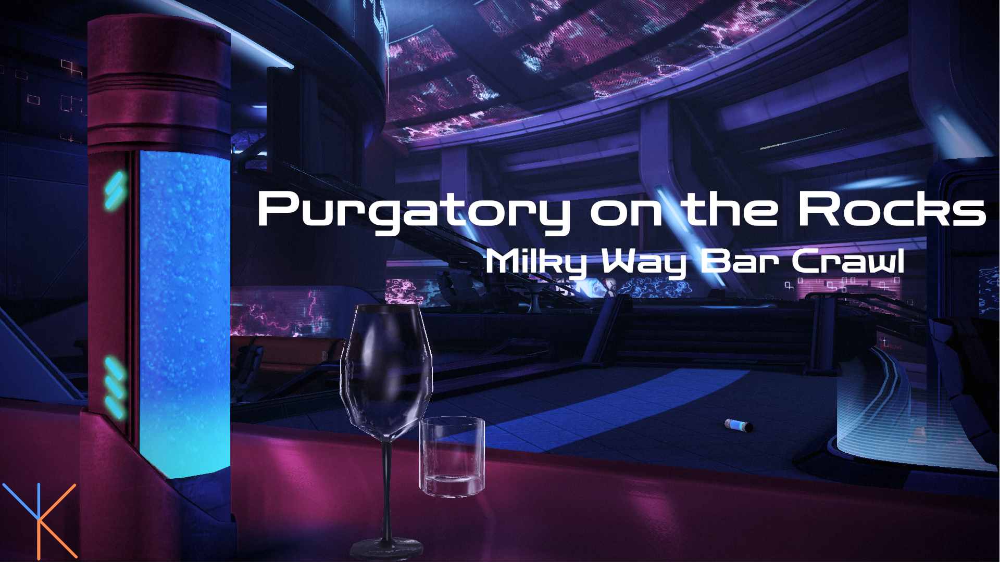

The Final Round
The last leg of the crawl - Mass Effect 3, where everything comes together. Time to patch the cracks, polish the glassware, and make sure the night ends on a satisfying note.
One more for the road. Let’s finish strong.
A note on downloading mods:
Batch
A curated night around the galaxy awaits those partaking in my vision.
To start, download your menu for the evening:
Purgatory on the Rocks: Dark, burning, and bittersweet - one last drink at the edge of all things.
Download it directly here:

or from the Nexus page:
(Nexus link to my guide once it's online)
Installation
Who says the journey need be any less than the destination? Here’s the secret to a good bar crawl:
- Open M3.
- Navigate to Mod Management → Batch Mod Installer.
-
- If you downloaded the list through M3, it will appear automatically.
- If you downloaded it manually, place the file into:(Your M3 folder)/mods/BatchModQueues
Then reopen the Batch Mod Installer. -
Go down the list and download each mod through the Batch Mod Installer to ensure you get the correct versions.
Depending on file sizes and whether you’re on free or premium Nexus, this may take a bit - please be patient with our aging barman. - Once all mods are downloaded, click Install this group and wait for the process to finish.
- Launch the game once to confirm everything works.
- Enjoy the rest of your night and proceed to Finish. *
Before you rush off you may wish to change one thing:
In M3, under Tools → Configuration tools for specific mods open EGM Settings (Legendary Edition).
Navigate to the Mission Timings tab and for the Citadel DLC switch to Disable DLC (or CEM Full).
You need to do this since we are using Citadel Epilogue Mod (CEM) which will make it so that DLC becomes a sort of Epilogue to the game.
If you do not change this you'll be able to start the DLC whenever which defeats the purpose of CEM a bit.
Manual
An unforgettable selection awaits the adventurous soul - those who wish to color the night to their own liking.
Patches / Compatibility / Downloads
Thanks to the install order below, all required compatibility patches will appear at the correct time.
You can simply follow the list from top to bottom.
LE3 Community Patch
Fixes thousands of bugs in the game and is foundational for a lot of other mods.
Myriad Pro Begone
Replaces the font used throughout the game with something more fitting for the setting.
Note: The file you download has a version for every game plus the Launcher. You may import everything if you want or just choose the ME3 version.
Journal Enhanced
Various quality of life enhancements for the journal.
Permanent CIC Hologram
Makes the holograms in the CIC persistent regardless of where you are.
Note: The file contains both the LE2 and LE3 version. You can import both or just the LE3 version.
F.I.S.H.
Traynor now feeds your fish without romancing her.
Emily Lives
Replaces Diana Allers with Emily Wong. (Truthfully I don't even dislike Diana Allers, I just hate that Emily Wong was killed off in a promotional gimmick Twitter storyline most people don't even know exists.)
Note: This mod uses AI to generate the voice lines.
Reegar Lives
Lets Reegar survive the story.
Apartment Additions
Additional decorations for your Citadel DLC Apartment.
Pinnacle Station Apartment
Lets you visit your apartment on Intai'sei.
Datapad App Messages Expanded
Restores messages from the defunct Datapad iOS app.
Remove Enemy Smoke Grenades
Removes the ability of enemies to use smoke grenades.
Note: This is a personal annoyance of mine. You may wish to skip this one.
No Movement Penalty During Rannoch Boss Fight
Removes the targeting speed penalty that seems to trip up many people.
Infinite Ammo In Geth Consensus
Removes the recharge time for the virtual gun.
Oriana Looks Like Miranda's Twin
Changes Oriana's face into Miranda's so they actually look like twins.
Unique Kahlee Sanders
Gives Kahlee Sanders a unique look based on her description in the books.
Note: This mod includes a texture file to update Kahlee's War Asset image. If you plan to texture mod your game, save the file for later.
Dreams Remade
Remakes the Dream Sequences.
Expanded Universe - Mod Menu
Allows users to select which extended universe material they've viewed to prevent spoilers in some mods.
Expanded Galaxy Mod
A massive overhaul and expansion of the galactic war.
Note: EGM has its own configuration utility which will open once the mod is installed. For now you can leave everything as is.
Note: If you plan on playing with Citadel Epilogue Mod you need to open the EGM Config and disable the Citadel DLC.
Shorter Notifications
Shortens the time notification popups stay on screen.
Omega Hub
Lets you visit Omega as a Hub after you complete the DLC.
Miranda Mod
Lets Miranda become a squadmate again.
N7 - A Spectre's Gift
Tie-in quest with Mass Effect Andromeda.
Citadel Epilogue Mod
Lets you play the Citadel DLC as an epilogue of the game.
Note: I recommend picking CEM Full.
Audemus' Happy Ending Mod
Changes the ending to a more hopeful one.
Armax Expansion Mod
Expands the Armax Arena added by the Citadel DLC.
Harbinger Overhaul Mod
Harbinger now directly participates in the opening Reaper attack.
LE3 Diversification Project
A complete overhaul of the game with the goal of making the world feel more lived in.
Liara Mourns The Dead
Restores a reflective scene with Liara.
Spectre Expansion Mod
Overhaul and expansion of the spectre aspect of the game.
Reaper Retrofits
Overhauls and diversifies the Reaper enemies.
Take Earth Back
Complete Overhaul of the final mission.
Geth Retrofits
Overhauls and diversifies the Geth enemies.
Cerberus Retrofits
Overhauls and diversifies the Cerberus enemies.
Reworked Kai Leng
Improves Kai Leng as a character.
CAT6 Retrofits
Overhauls and diversifies the CAT6 enemies.
Leviathan Retrofits
Overhauls and diversifies the Leviathan enemies.
Immersive Thessia Mod
Overhauls the Thessia mission for a more atmospheric and immersive experience.
LE3 Opening Remaster
Restores the original, slightly longer opening.
A Lot Of Videos
Manually upscaled all pre-rendered videos in the game to 4k60fps.
Smoother GUI
The menus in the game are rendered at 30fps. This mod adjusted them to 60fps, which is a noticeable improvement.
Patch Notes
All necessary compatibility patches should have appeared at the right time during installation.
If a patch option did not appear for a mod, simply reinstall that single mod to refresh its patch list.
Otherwise, no additional steps are required - you're good to go.
Proceed to Finish whenever you are ready.